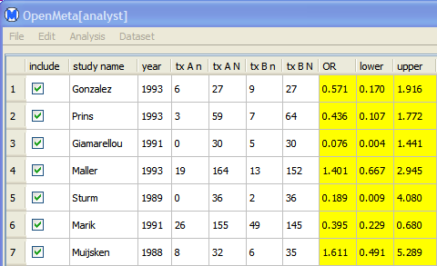
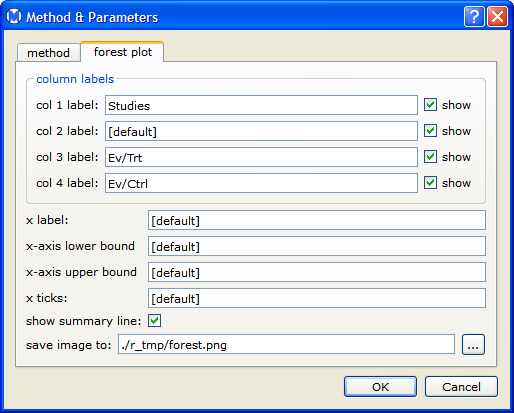
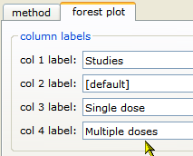

Example - Binary Data
This section provides an example that illustrates how to perform a meta-analysis of binary data.
To run the example, do the following steps:
- Open the data set amino.oma, as described in Opening an Existing Data Set.

The data is taken from a meta-analysis of studies of the effects of single versus multiple daily doses of aminoglycosides in the treatment of infections.
- Select the studies you want to include in the analysis, using the check boxes in the "include" column. In this example,
all studies are selected.
- Click the Analysis menu
and select metric > two-arm.
- Select a metric for the analysis, such as RR (risk ratio), as shown below.

See Metric Options for a complete description of the available metrics.
- In the Analysis menu,
select meta-analysis .
This opens the Methods & Parameters dialog, as shown below.

- Click the analysis method field and select a method for the analysis. The default method is Binary Random-Effects..

See
Analysis Options for a complete description of the available methods.
- Select the forest plot tab, which displays the forest plot parameters dialog.

- Click in the col 3 label field and change the label to "Single dose." Similarly, change col 4 label to "Multiple doses."

- Click OK to
perform the analysis.
The results are displayed in the results/analysis window, as shown below:
- The Summary contains the overall results of the meta-analysis, including the summary estimate, confidence interval, and heterogeneity statistics.
- The Forest Plot provides a graphical display of the point estimates and confidence intervals for each study, as well as the overall estimate.

Source: Barza, M., Ioannidis, J., Cappelleri, J., Lau, J. "Single or multiple daily doses of aminoglycosides: a meta-analysis." BMJ, Vol. 312, 1966.
Back to top
 | Opening an Existing Data Set | | Example: Diagnostic Data |  |